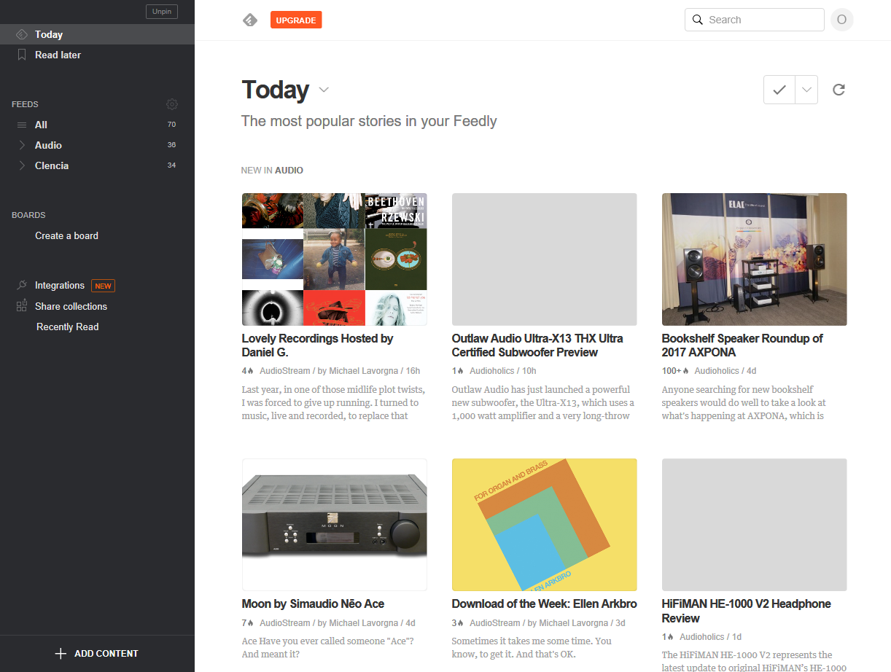
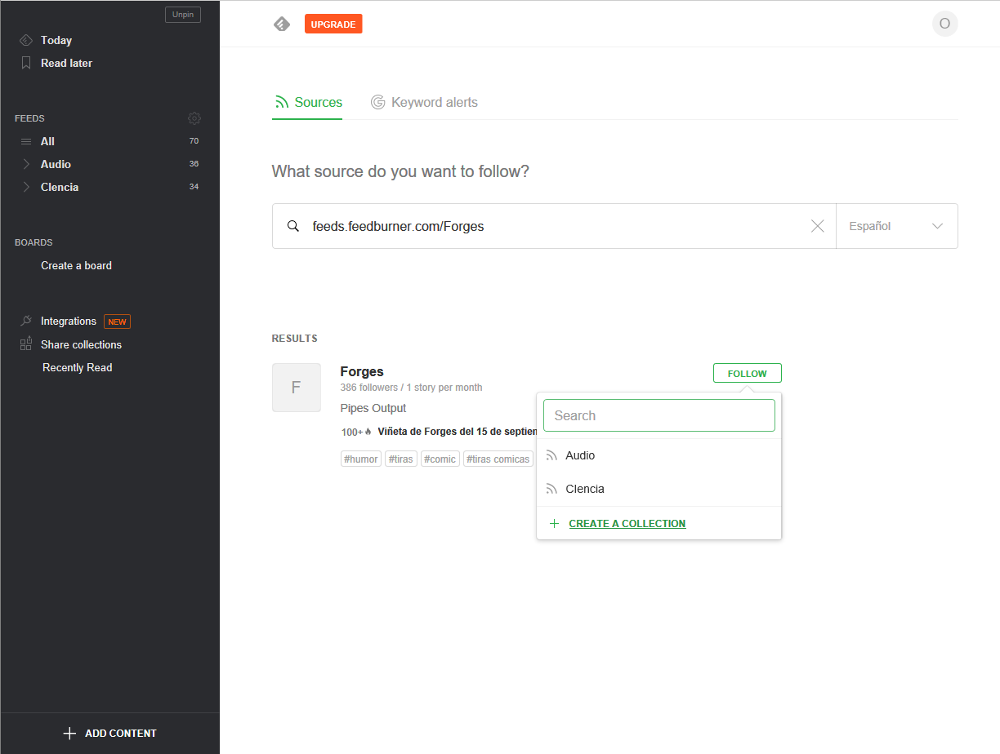
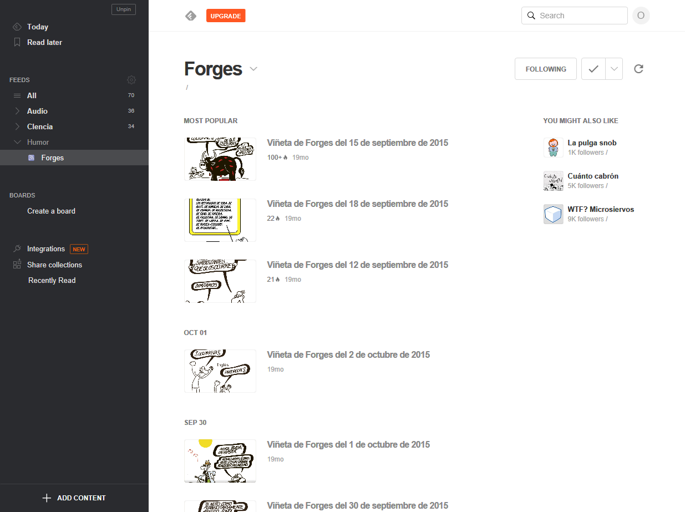

Sindicación Atom Utilizar Feedly para acceder a la información del canal de contenidos feeds.feedburner.com/Forges  Captura de la cuenta de Feedly antes de agregar el canal de Forges.  Captura de la cuenta de Feedly mientras agregamos el canal de Forges.  Captura de la cuenta de Feedly una vez agregado el canal de Forges.